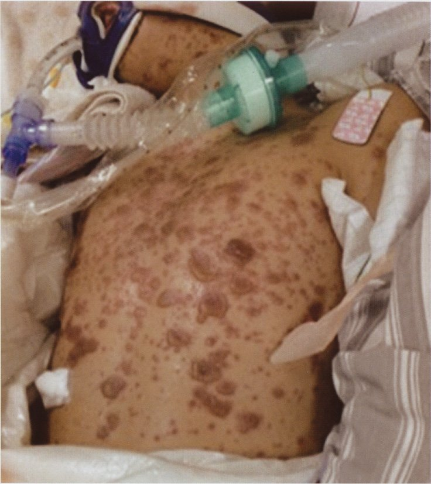
| 選択肢 | 解説 |
|---|---|
| ａ 抗菌薬 | 本態は薬剤に対するT細胞性の免疫反応であって細菌感染症ではないため、一次治療にはならない。広範なびらんは細菌の侵入門戸になるが、予防的な全身抗菌薬のルーチン投与は耐性菌を生むため推奨されない（培養と全身状態を見て、敗血症を疑った時点で開始する）。 |
| ｂ NSAID | 本例の被疑薬そのもの。重症薬疹で最初にすべきことは被疑薬の中止であり、継続・再投与は症状を悪化させ致死的になりうる。NSAIDはSJS/TENの代表的な原因薬である。 |
| ｃ 抗ウイルス薬 | 単純ヘルペスウイルス〈HSV〉が誘因の多形滲出性紅斑なら意味があるが、本例はNSAID内服5日目に発症した薬剤性の重症薬疹で、ウイルス感染を示す所見がない。（HSVが原因になる紅斑はQ.67を参照） |
| ｄ 抗ヒスタミン薬 | ヒスタミンを介するⅠ型アレルギー（蕁麻疹・血管性浮腫）の薬。SJS/TENは細胞傷害性T細胞とNK細胞が表皮細胞をアポトーシスさせる反応なので、抗ヒスタミン薬では表皮壊死を止められない。瘙痒の対症薬にすぎない。 |
| ◯ ｅ グルココルチコイド | 重症薬疹（SJS／TEN）に対する全身療法の第一選択。被疑薬の中止に続けて、可及的早期にステロイド全身投与（プレドニゾロン1〜2mg/kg／日、重症例はステロイドパルス）を行う。効果不十分なら大量免疫グロブリン静注〈IVIG〉・血漿交換を追加する。 |
| 手順 | 内容 | ポイント |
|---|---|---|
| ①止める | 被疑薬の即時中止 | 最優先かつ唯一「必ず正解」の対応。内服歴を4週間さかのぼって全部並べ、疑わしいものは全て止める（Q.72） |
| ②支える | 輸液・電解質補正・高カロリー輸液・創部の被覆・疼痛管理・体温管理 | 広範囲熱傷に準じた全身管理。眼科を必ず併診（癒着・角膜混濁で失明しうる） |
| ③抑える | ステロイド全身投与（PSL 1〜2mg/kg／日〜パルス）→IVIG→血漿交換 | 早期であるほど有効。難治例ではシクロスポリン・抗TNF-α抗体の報告もある |
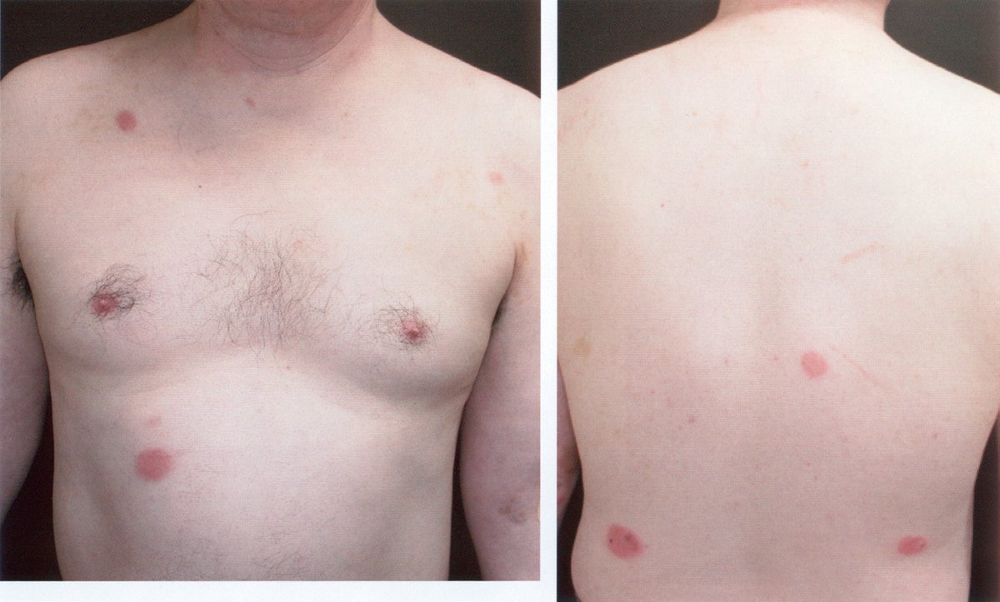
| 選択肢 | 解説 |
|---|---|
| ◯ ａ 固定薬疹 | 同一薬剤の内服のたびに、毎回まったく同じ部位に円形の紅斑が生じ、軽快後に色素沈着を残す——この病歴だけで診断できる。2年間・6か月ごと・同じ部位・色素沈着・DLST陽性と、固定薬疹の要件が全て揃っている。 |
| ｂ 尋常性乾癬 | 銀白色の厚い鱗屑を伴う境界明瞭な浸潤性紅斑が被髪頭部・肘膝の伸側・殿部などの機械的刺激部位に慢性に持続する。薬剤内服と時間的に一致して出没したり、色素沈着を残して消えたりはしない。 |
| ｃ 薬剤性過敏症症候群 | 原因薬（カルバマゼピン・アロプリノール等）を2〜6週間内服した後に発症する全身性の重症薬疹で、高熱・全身の紅斑・リンパ節腫脹・肝障害・好酸球増多・HHV-6再活性化を伴う（Q.61・Q.71・Q.77）。本例は限局した皮疹のみで全身症状がない。 |
| ｄ Gibertばら色粃糠疹 | 若年者の体幹に、先行する大きな herald patch（初発斑）に続いて楕円形の淡紅色斑がクリスマスツリー状に多発するもの。1〜2か月で自然治癒し再発しにくい点でも、薬剤に一致して同一部位に再発する本例とは異なる。 |
| ｅ Stevens-Johnson症候群 | 高熱と粘膜びらんを伴い、表皮が壊死・剝離する重症薬疹（Q.55）。本例は全身症状も粘膜疹もなく、2週間で自然消褪している。ただし固定薬疹の重症型（汎発性水疱性固定薬疹）はSJSとの鑑別が問題になる。 |
| 検査 | 方法 | 特徴 |
|---|---|---|
| 薬剤リンパ球刺激試験〈DLST／LTT〉 | 患者リンパ球に薬剤を加えて増殖反応を見るin vitro検査 | 患者に薬を入れないので安全。本例で陽性＝NSAIDが原因と裏づけられた。感度は高くない（陰性でも否定できない） |
| 誘発パッチテスト | 色素沈着を残した「もとの病変部」に被疑薬を貼付 | 固定薬疹では病変部に貼らないと陽性にならないのが特徴的（正常皮膚では陰性）。TRMが病変部だけに常駐しているためである |
| 内服誘発試験 | 少量から再投与 | 最も確実だが再燃させるため慎重に。SJS/TEN・DIHSでは絶対禁忌（Q.62） |
| 選択肢 | 解説 |
|---|---|
| ａ 効能又は効果 | その薬がどの疾患に使えるかを示す項目。処方の適応を決めるときに見るもので、出現してしまった有害事象の原因を調べる役には立たない。 |
| ｂ 用法及び用量 | 投与量・投与間隔・投与経路の項目。過量投与による中毒を疑う場面では有用だが、薬疹は用量に依存しないアレルギー反応（Ⅳ型が主体）なので、規定どおり飲んでいても起こる。 |
| ｃ 相互作用 | 併用薬による血中濃度の変動や作用の増強・減弱を示す項目。複数薬を飲んでいる患者では確かに確認すべきだが、「皮疹が出た」という事象そのものが既知の副作用かどうかを先に確かめるのが順序である。 |
| ◯ ｄ 副作用 | 出現した皮疹がその薬で報告されている副作用かどうかを最初に確認する。添付文書の副作用の項には「重大な副作用」としてSJS・TEN・DIHS・急性汎発性発疹性膿疱症が具体的に列挙されており、その初期症状も記載されているため、重症薬疹を見逃さないための最短経路になる。 |
| ｅ 薬物動態 | 吸収・分布・代謝・排泄（半減期・AUC等）のデータ。腎障害・肝障害時の用量調節や、中止後に薬が抜けるまでの時間を推定するのに使うが、因果関係の判断には直結しない。 |
| 知りたいこと | 見る項目 |
|---|---|
| 出た症状がこの薬の副作用か | 副作用（とくに重大な副作用） |
| この患者に使ってよかったか | 禁忌／特定の背景を有する患者への注意 |
| 併用薬の影響はあるか | 相互作用 |
| 腎・肝障害時の減量は | 用法及び用量／薬物動態 |
| 中止後どれくらいで抜けるか | 薬物動態（半減期） |
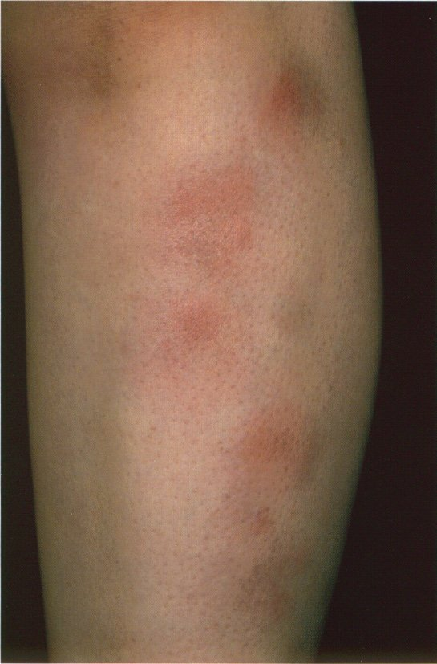
| 選択肢 | 解説 |
|---|---|
| ａ 糖尿病 | 糖尿病に伴う皮膚病変はリポイド類壊死症〈necrobiosis lipoidica〉・糖尿病性水疱・浮腫性硬化症・足病変（潰瘍・壊疽）・皮膚感染症（癜風・カンジダ・癤）などである。結節性紅斑の基礎疾患として挙がることはない。 |
| ◯ ｂ Crohn病 | 炎症性腸疾患〈IBD〉は結節性紅斑の代表的な基礎疾患。Crohn病・潰瘍性大腸炎いずれでも腸管外合併症として生じ、腸病変の活動性と平行して増悪することが多い。IBDの皮膚合併症としては壊疽性膿皮症も重要。 |
| ◯ ｃ Behçet病 | Behçet病の主症状4つのうちの1つが「結節性紅斑様皮疹」。再発性アフタ性口内炎・外陰部潰瘍・皮膚症状（結節性紅斑様皮疹、毛囊炎様皮疹、針反応陽性）・眼症状（ぶどう膜炎）で構成される（Q.76）。 |
| ｄ 全身性強皮症 | 皮膚硬化（手指から近位へ）・Raynaud現象・爪郭部の毛細血管異常・間質性肺炎・逆流性食道炎・腎クリーゼが主体で、脂肪織の炎症である結節性紅斑とは病態が異なる。抗Scl-70抗体・抗セントロメア抗体・抗RNAポリメラーゼⅢ抗体が診断の助けとなる。 |
| ◯ ｅ サルコイドーシス | 結節性紅斑を伴うサルコイドーシスはLöfgren症候群として知られる。結節性紅斑＋両側肺門リンパ節腫脹〈BHL〉＋関節炎（＋発熱）の組合せで、急性発症だが予後は良好で自然寛解しやすい。 |
| 疾患 | 部位 | 病理 | 潰瘍化 | 手がかり |
|---|---|---|---|---|
| 結節性紅斑 | 下腿前面・両側 | 隔壁性脂肪織炎（血管炎なし） | しない | 有痛性・熱感、数週で瘢痕なく治癒 |
| 硬結性紅斑〈Bazin〉 | 下腿後面（ふくらはぎ）・中年女性 | 小葉性脂肪織炎＋血管炎、乾酪壊死 | する | 結核アレルギー、慢性の経過（Q.65） |
| 結節性多発動脈炎／皮膚型 | 下腿 | 中〜小動脈の壊死性血管炎 | する | 網状皮斑・多発単神経炎 |
| 壊疽性膿皮症 | 下腿 | 好中球性皮膚症 | する（穿掘性潰瘍） | IBD・関節リウマチ・血液疾患、パセルギー（外傷で悪化）＝デブリードマン禁 |
| 丹毒・蜂窩織炎 | 片側性 | 細菌感染 | まれ | 片側性・境界明瞭（丹毒）・発熱・CRP高値 |
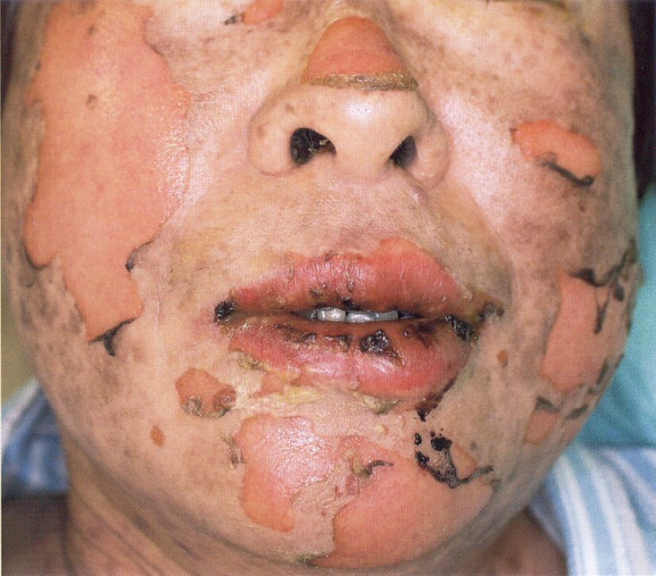
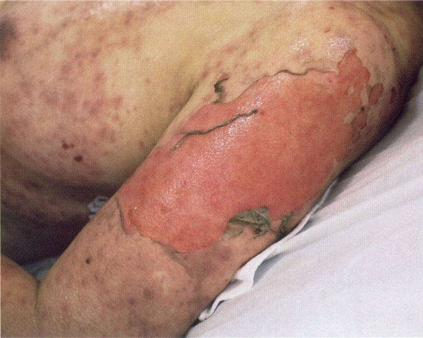
| 病型 | びらん面積 | 死亡率の目安 |
|---|---|---|
| Stevens-Johnson症候群〈SJS〉 | BSAの10％未満 | 数％ |
| SJS-TEN移行型 | 10〜30％ | 10〜15％ |
| 中毒性表皮壊死症〈TEN〉 | BSAの30％超 | 20〜30％ |
| SJS／TEN | DIHS | AGEP | |
|---|---|---|---|
| 潜伏期 | 数日〜4週 | 2〜6週と長い | 数日と短い |
| 主病変 | 紅斑→水疱→びらん・表皮剝離 | 紅斑〜紅皮症、顔面浮腫 | 無菌性小膿疱 |
| 粘膜疹 | 必発（眼・口唇・外陰） | 軽度〜無 | 軽度 |
| 血液 | 非特異的 | 好酸球増多・異型リンパ球・肝障害 | 好中球増多 |
| ウイルス | — | HHV-6再活性化 | — |
| 経過 | 急激・致死的 | 中止後も遷延・再燃、後に自己免疫疾患 | 中止で1〜2週で軽快 |
| 選択肢 | 解説 |
|---|---|
| ａ 固定薬疹 | 同じ薬のたびに同じ部位に円形紅斑が出て色素沈着を残す限局性の薬疹（Q.56）。体表面積40％以上に及ぶ広範なびらんや、高熱・眼と口腔の粘膜疹は起こさない。 |
| ｂ 多形滲出性紅斑 | 四肢末梢に標的状（虹彩状）紅斑が左右対称に多発するもので（Q.60・Q.67）、粘膜病変は無いか軽微、表皮の広範な壊死も起こさない。本例のように粘膜が侵され表皮が面で剝がれた時点で「重症型」＝SJS/TENへ移る。 |
| ◯ ｃ 中毒性表皮壊死症 | 水疱・びらんが体表面積の30％を超えれば定義上TEN。本例は40％以上で、高熱・眼球結膜充血・口唇痂皮・口腔粘膜びらんという粘膜病変も揃い、DLST 358％で総合感冒薬が原因薬として裏づけられている。 |
| ｄ 薬剤過敏症症候群 | DIHSの必須所見であるHHV-6の再活性化（抗体価の有意な上昇）が3週間後も10倍のまま起きていない点が決定的に合わない（Q.61・Q.71・Q.77）。DIHSは水疱・びらんではなく紅斑～紅皮症が主体で、好酸球増多・異型リンパ球・リンパ節腫脹・肝障害を伴う。 |
| ｅ 急性汎発性発疹性膿疱症 | 投与後数日で高熱とともに、浮腫性紅斑上に多数の無菌性小膿疱が播種状に出現する薬疹〈AGEP〉。主病変は膿疱であって水疱・びらんではない。原因薬はβラクタム系抗菌薬・マクロライド等が多く、中止後1〜2週で膜様落屑を伴って軽快する。 |
| 疾患 | 剝離のレベル | 粘膜 | 決め手 |
|---|---|---|---|
| TEN | 表皮全層壊死・表皮下（基底膜部）で剝離 | 高度 | 薬剤歴、皮膚生検 |
| ブドウ球菌性熱傷様皮膚症候群〈SSSS〉 | 顆粒層で浅く裂ける | 侵さない | 乳幼児、黄色ブドウ球菌の表皮剝脱毒素、口囲の放射状亀裂、抗菌薬で治る |
| 尋常性天疱瘡 | 表皮内（棘融解） | 口腔びらんで初発 | 抗デスモグレイン3抗体、慢性の経過 |
| 熱傷・化学熱傷 | — | — | 受傷歴 |
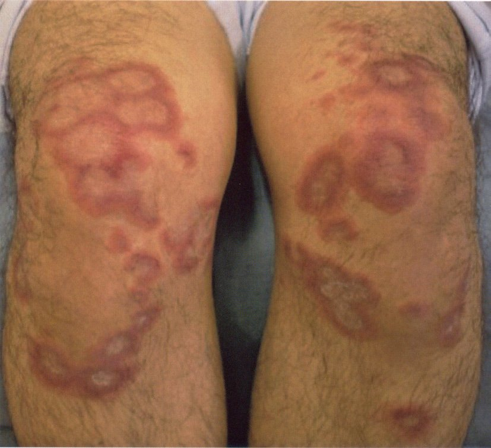
| 選択肢 | 解説 |
|---|---|
| ａ 薬 剤 | 薬剤は多形滲出性紅斑の代表的な誘因である。NSAID・抗菌薬・抗てんかん薬などが原因となり、重症化すればSJS/TENへ連続する（Q.55）。「考えにくい」ものを選ぶ設問なので、これは残る。 |
| ◯ ｂ 皮膚筋炎 | 皮膚筋炎の皮疹はまったく別物である。上眼瞼の紫紅色浮腫性紅斑〈ヘリオトロープ疹〉、手指関節伸側の角化性紅斑〈Gottron徴候〉、爪郭部の毛細血管拡張・爪上皮出血点、肩・上背部のショール徴候が特徴で、標的状病変を四肢末梢に急性多発することはない。近位筋の筋力低下・CK上昇・悪性腫瘍の合併検索が主題となる疾患である。 |
| ｃ 虫刺され | 虫刺症（虫刺され）も多形滲出性紅斑型の反応を誘発しうる。刺咬部を中心に瘙痒を伴う浮腫性紅斑・水疱を生じ、遅延型反応として標的状の皮疹を呈することがある。 |
| ｄ マイコプラズマ | Mycoplasma pneumoniae 感染は、とくに小児・若年者で多形滲出性紅斑や粘膜優位型の重症型（MIRM）を引き起こすことが知られる。解答一覧表でも本問の関連疾患に挙げられている。 |
| ｅ 単純ヘルペスウイルス | 再発性多形滲出性紅斑の最多の原因がHSVである。口唇ヘルペスの1〜2週後に標的状紅斑が出るというパターンが典型で、反復例にはアシクロビルの予防内服を行う（Q.67）。 |
| 皮膚筋炎の皮疹 | 部位・性状 |
|---|---|
| ヘリオトロープ疹 | 上眼瞼の紫紅色の浮腫性紅斑 |
| Gottron徴候／丘疹 | 手指関節（MCP・PIP・DIP）伸側の角化性紅斑 |
| ショール徴候／V徴候 | 肩・上背部／前胸部Vゾーンの日光露出部紅斑 |
| 爪囲紅斑・爪上皮出血点 | 爪郭部の毛細血管拡張（膠原病に共通の重要所見） |
| mechanic's hand | 手指側面の角化・亀裂（抗ARS抗体＋間質性肺炎） |
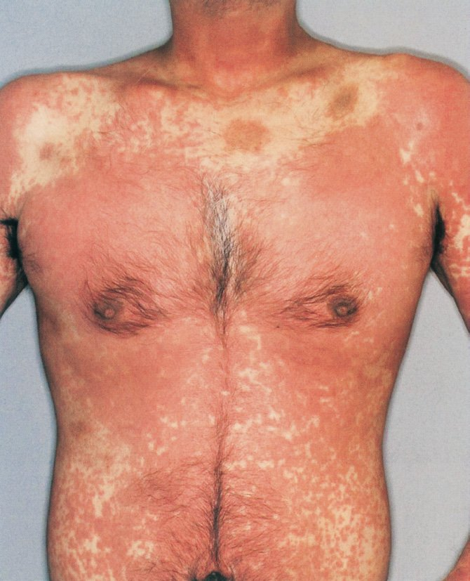
| 選択肢 | 解説 |
|---|---|
| ａ 麻 疹 | カタル期の発熱・咳嗽・鼻汁・結膜炎と Koplik斑に続き、いったん解熱してから再度発熱するとともに耳後部から融合傾向の紅斑が下降する。好酸球増多は来さず、薬剤との時間的関係もない。成人麻疹では麻疹IgMを確認する。 |
| ｂ 伝染性紅斑 | パルボウイルスB19による小児の疾患で、両頬の境界明瞭な紅斑（りんご病）と四肢のレース様（網目状）紅斑が特徴。皮疹が出るころには感染力は無く、全身状態も良い。成人では関節痛が目立つが、肝障害・好酸球増多は伴わない。 |
| ｃ 伝染性単核球症 | EBウイルスの初感染で、発熱・咽頭痛・頸部リンパ節腫脹・肝脾腫・異型リンパ球の著増を来す。確かに紛らわしいが、本例はVCA-IgG抗体・抗EBNA抗体がともに陰性でEBV感染を否定でき、好酸球23％という著明な増多も伝染性単核球症では説明できない。 |
| ｄ 中毒性表皮壊死症 | 表皮が全層で壊死し、水疱・びらん・粘膜疹を伴うのがTENである（Q.59・Q.73）。本例は紅斑が融合するのみで水疱・びらんが無く、口腔粘膜と咽頭も正常。また好酸球増多・異型リンパ球・肝障害はTENの特徴ではない。 |
| ◯ ｅ 薬剤性過敏症症候群 | DIHSの診断基準をほぼ完全に満たす。①カルバマゼピン（代表的な原因薬）を6週間内服という長い潜伏期、②遷延する高熱と融合する紅斑、③リンパ節腫脹、④好酸球23％、⑤異型リンパ球3％、⑥肝障害（ALT 345）、⑦HHV-6 IgG抗体価が20倍→1,280倍と有意に上昇（再活性化）。 |
| DIHS | SJS/TEN | |
|---|---|---|
| 潜伏期 | 2〜6週（長い） | 数日〜4週 |
| 皮疹 | 紅斑→紅皮症、顔面浮腫 | 水疱・びらん・表皮剝離 |
| 粘膜 | 軽度〜無 | 高度（眼・口唇・外陰） |
| 血液 | 好酸球増多・異型リンパ球・肝障害 | 非特異的 |
| 中止後 | 遷延・再燃 | 改善へ向かう |
| 晩期 | 自己免疫疾患（劇症1型糖尿病） | 眼合併症（失明） |
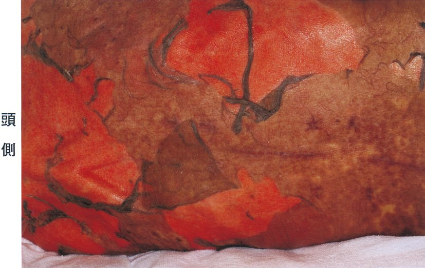
| 機序 | 代表疾患 | 使う検査 |
|---|---|---|
| Ⅰ型（IgE・即時型） | 蕁麻疹・血管性浮腫・アナフィラキシー | プリック／スクラッチテスト・皮内テスト・特異的IgE |
| Ⅳ型（T細胞・遅延型） | 接触皮膚炎・播種状紅斑丘疹型薬疹・固定薬疹・SJS／TEN・DIHS・AGEP | パッチテスト（貼布試験）・薬剤リンパ球刺激試験〈DLST〉 |
| 選択肢 | 解説 |
|---|---|
| ａ 皮内テスト | アレルゲンを皮内に注射するⅠ型アレルギーの検査で、15〜20分後の膨疹・発赤で判定する。SJS/TENはⅣ型（T細胞性）なので機序が合わないうえ、抗原を体内に入れるためアナフィラキシーや皮疹の再燃を招く危険がある。 |
| ◯ ｂ パッチテスト | 被疑薬を皮膚に貼付し、48・72時間後（さらに7日後）に判定するⅣ型アレルギーの検査。SJS/TEN・DIHS・固定薬疹など遅延型機序の薬疹の原因薬同定に用いる。薬剤を全身に入れないので安全性が高く、症状が完全に落ち着いてから（回復後1か月以降）行う。 |
| ｃ 特異的IgE検査 | 血中の抗原特異的IgEを測るⅠ型アレルギーの検査。食物・花粉・ハチ毒などには有用だが、薬剤のIgE検査は測定できる項目自体が限られ、Ⅳ型である重症薬疹の原因究明には使えない。 |
| ｄ 常用量再投与試験 | SJS/TENでは絶対禁忌。原因薬を再投与すれば同じ、あるいはより重症の反応を再現し、死亡しうる。内服誘発試験を考慮できるのは軽症薬疹に限られ、それでも極少量から慎重に行う。 |
| ｅ スクラッチテスト | 皮膚を浅く傷つけて抗原を垂らすⅠ型アレルギーの検査で、プリックテストと同系統。皮内テストと同じ理由で不適である。 |
| 原因薬 | 注意すべき交叉反応 |
|---|---|
| ペニシリン系 | セフェム系との交叉は数％程度（従来言われたほど高くない）。側鎖構造が似るものほどリスクが高い |
| カルバマゼピン | フェニトイン・フェノバルビタール（芳香環をもつ抗てんかん薬同士）。代替はバルプロ酸・レベチラセタム |
| サルファ薬（ST合剤） | 他のスルホンアミド構造をもつ薬 |
| アスピリン／NSAID | COX-1阻害を共有する全NSAID（アスピリン喘息型では交叉する） |
| 選択肢 | 解説 |
|---|---|
| ａ 類乾癬 | 尋常性乾癬に似た鱗屑性紅斑を示すが乾癬ではない一群の総称。大局面型類乾癬は菌状息肉症（皮膚T細胞リンパ腫）の前駆病変となりうるため経過観察が要るが、全身症状（発熱・関節痛）は伴わない。 |
| ｂ 魚鱗癬 | 角化の遺伝性異常により全身の皮膚が乾燥し魚のうろこ状の鱗屑で覆われる疾患群。尋常性魚鱗癬（フィラグリン遺伝子変異、常染色体顕性）が最多。炎症性疾患ではないので関節痛は伴わない。 |
| ◯ ｃ Sweet病 | Sweet病〈急性熱性好中球性皮膚症〉は発熱・関節痛・全身倦怠感といった全身症状を伴うことが診断基準に含まれる。有痛性の浮腫性紅色局面が顔面・頸部・上肢に急性多発し、末梢血好中球増多とCRP上昇を伴う（Q.64・Q.80）。 |
| ｄ 菌状息肉症 | 皮膚T細胞リンパ腫で、紅斑期→扁平浸潤期→腫瘍期と年余をかけて進行する。瘙痒は強いが、関節痛を特徴とはしない。末期に白血化したものがSézary症候群である。 |
| ｅ 自家感作性皮膚炎 | 原発巣（うっ滞性皮膚炎・接触皮膚炎など）の悪化に続いて、離れた部位に散布疹が全身性に多発するもの。瘙痒が主体で、発熱・関節痛といった全身症状は通常伴わない。 |
| 疾患 | 皮疹 | 全身症状 | 決め手 |
|---|---|---|---|
| Sweet病 | 有痛性浮腫性紅色局面（顔・頸・上肢） | 発熱・関節痛 | 好中球増多、真皮の好中球浸潤、ステロイド著効 |
| 成人Still病 | サーモンピンク疹（発熱時に出没するリウマトイド疹） | 弛張熱・関節炎・咽頭痛 | フェリチン著増、白血球増多 |
| Behçet病 | 結節性紅斑様皮疹・毛囊炎様皮疹 | 関節炎・ぶどう膜炎 | 口腔アフタ・外陰部潰瘍・針反応 |
| 乾癬性関節炎 | 鱗屑性紅斑・爪の点状陥凹 | DIP関節炎・指趾炎・付着部炎 | 乾癬の皮疹が先行、リウマトイド因子陰性 |
| SLE | 蝶形紅斑・円板状皮疹・日光過敏 | 関節痛・漿膜炎・腎炎 | 抗dsDNA抗体・抗Sm抗体・低補体 |
| 結節性紅斑 | 下腿前面の有痛性結節 | 発熱・関節痛 | 基礎疾患の検索（Q.58） |
| 浸潤の深さ | 疾患 | 臨床像 |
|---|---|---|
| 表皮内 | 膿疱性乾癬・角層下膿疱症・AGEP | 無菌性膿疱 |
| 真皮 | Sweet病 | 有痛性の浮腫性紅色局面 |
| 真皮深層〜皮下 | 壊疽性膿皮症 | 辺縁が穿掘性の潰瘍 |
| 選択肢 | 解説 |
|---|---|
| ◯ ａ 好中球 | Sweet病の正式名称は「急性熱性好中球性皮膚症」であり、病理では真皮に好中球がびまん性に浸潤し、末梢血でも白血球増多（好中球優位）を示す。診断基準の小項目にも「白血球8,000以上・好中球70％以上」が含まれる。 |
| ｂ 好酸球 | 好酸球が増えるのはアレルギー疾患（アトピー性皮膚炎・薬疹とくにDIHS）・寄生虫症・好酸球性多発血管炎性肉芽腫症・水疱性類天疱瘡など。Sweet病では増えない（DIHSとの対比で覚える。Q.61）。 |
| ｃ 好塩基球 | 末梢血で好塩基球が増える代表は慢性骨髄性白血病で、皮膚疾患で問われることはまずない。 |
| ｄ 単 球 | 単球増多は慢性骨髄単球性白血病〈CMML〉・結核・感染性心内膜炎・回復期の感染症などで見られる。Sweet病の主役ではない（ただしSweet病はMDS/CMMLに合併しうる）。 |
| ｅ リンパ球 | リンパ球増多はウイルス感染（伝染性単核球症では異型リンパ球）・百日咳・慢性リンパ性白血病など。Sweet病は好中球性疾患であり、リンパ球性ではない。 |
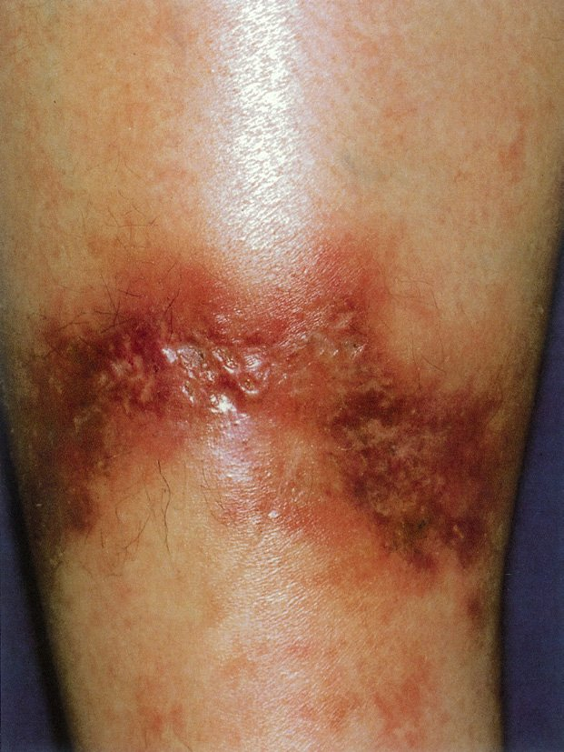
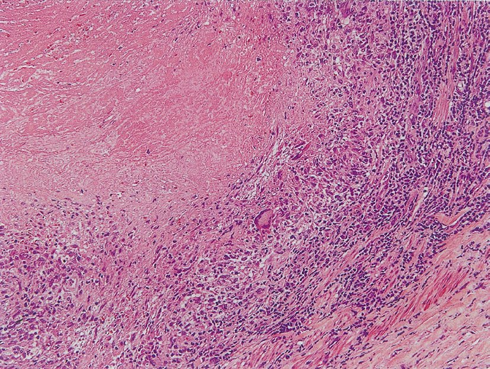
| 選択肢 | 解説 |
|---|---|
| ａ 結節性紅斑 | 下腿前面に有痛性の紅色結節が急性に出るが、数週間で瘢痕を残さず自然消退するのが原則（Q.58）。3か月も治癒せず持続する点が合わない。病理も隔壁性脂肪織炎で血管炎を伴わない。 |
| ◯ ｂ 硬結性紅斑 | 中年女性の下腿に、3か月以上持続する暗紅色の硬い皮下結節・浸潤性局面を生じ、潰瘍化・瘢痕化する。病理は小葉性脂肪織炎に血管炎と乾酪壊死を伴う肉芽腫で、結核アレルギー（結核疹）と位置づけられる（Bazin硬結性紅斑）。 |
| ｃ 壊疽性膿皮症 | 急速に拡大する有痛性の潰瘍で、辺縁が紫紅色に堤防状隆起し穿掘性（アンダーマイニング）を示す。炎症性腸疾患・関節リウマチ・血液疾患に合併し、パセルギーのためデブリードマンは禁忌。本例は潰瘍が主体ではない。 |
| ｄ うっ滞性皮膚炎 | 下肢静脈瘤・深部静脈血栓後遺症による慢性静脈うっ滞を背景に、下腿下1/3〜足関節周囲に色素沈着・湿疹・硬化（脂肪皮膚硬化症）を生じる。瘙痒が主体で、浮腫・静脈瘤・ヘモジデリン沈着を伴う点が異なる。 |
| ｅ サルコイドーシス | 皮膚サルコイドーシスは結節型・局面型・びまん浸潤型・瘢痕浸潤型などをとり、病理は乾酪壊死を伴わない類上皮細胞肉芽腫〈naked granuloma〉が特徴。乾酪壊死の有無で硬結性紅斑と区別する。なおサルコイドーシスは結節性紅斑の基礎疾患にもなる（Q.58）。 |
| 結節性紅斑 | 硬結性紅斑〈Bazin〉 | |
|---|---|---|
| 好発部位 | 下腿前面（伸側） | 下腿後面（屈側・ふくらはぎ） |
| 経過 | 急性・数週で消退 | 慢性・数か月〜年、再発反復 |
| 疼痛 | 強い自発痛・熱感 | 軽度の圧痛 |
| 潰瘍化 | しない（瘢痕を残さない） | する（萎縮性瘢痕を残す） |
| 病理 | 隔壁性脂肪織炎、血管炎なし | 小葉性脂肪織炎＋血管炎＋乾酪壊死性肉芽腫 |
| 原因 | 溶連菌・サルコイド・Behçet・IBD・薬剤ほか多彩 | 結核アレルギー（結核疹） |
| 検査 | ASO、胸部X線、便潜血ほか | ツ反強陽性・IGRA陽性・胸部X線／CT |
| 治療 | 安静・NSAID・基礎疾患治療 | 抗結核薬（多剤併用）が著効 |
| 炎症の深さ | 代表疾患 | 主症状 |
|---|---|---|
| 表皮・真皮浅層 | 湿疹・アトピー性皮膚炎・接触皮膚炎・蕁麻疹・薬疹・多形滲出性紅斑・白癬 | 瘙痒 |
| 真皮深層 | Sweet病・蜂窩織炎 | 疼痛・熱感 |
| 皮下脂肪織 | 結節性紅斑・硬結性紅斑 | 自発痛・圧痛（瘙痒なし） |
| 選択肢 | 解説 |
|---|---|
| ａ 薬 疹 | 播種状紅斑丘疹型をはじめ多くの薬疹は瘙痒を伴う。固定薬疹は灼熱感と瘙痒を、DIHSは全身の紅斑に強い瘙痒を伴うことが多い（Q.56・Q.61）。 |
| ｂ 蕁麻疹 | 瘙痒の代表疾患。肥満細胞から遊離したヒスタミンが真皮の知覚神経C線維を直接刺激するため、「痒み」が主症状そのものである。膨疹は数時間で跡形なく消える。 |
| ◯ ｃ 結節性紅斑 | 結節性紅斑の主症状は「痛み」であって「痒み」ではない。炎症の主座が表皮・真皮浅層ではなく皮下脂肪織の隔壁にあるため、表皮内の痒み受容線維が刺激されず、代わりに深部の侵害受容器が刺激されて自発痛・圧痛・熱感を生じる（Q.58）。 |
| ｄ 多形滲出性紅斑 | 標的状紅斑は瘙痒や灼熱感を伴うことが多い（Q.60の症例も「瘙痒を伴う」と明記されている）。 |
| ｅ アトピー性皮膚炎 | 診断基準の第1項目が「瘙痒」であり、IL-31を軸としたitch-scratch cycleが病態の中心をなす。痒みが無ければアトピー性皮膚炎とは診断できない。 |
| 原因 | 手がかり |
|---|---|
| 慢性腎不全・透析 | 尿毒素、ナルフラフィンが有効 |
| 胆汁うっ滞（原発性胆汁性胆管炎・閉塞性黄疸） | 胆汁酸↑、黄疸に先行することがある。コレスチラミン・ナルフラフィン |
| 悪性リンパ腫（とくにHodgkinリンパ腫） | B症状（発熱・盗汗・体重減少） |
| 真性多血症 | 入浴後の痒み（aquagenic pruritus） |
| 鉄欠乏性貧血・甲状腺機能異常・糖尿病 | 該当する全身症状 |
| 高齢者の皮脂欠乏（老人性乾皮症） | 最も多い原因。冬季・下腿から。保湿で改善 |
| 薬剤（オピオイド等）・妊娠・心因性 | 病歴 |
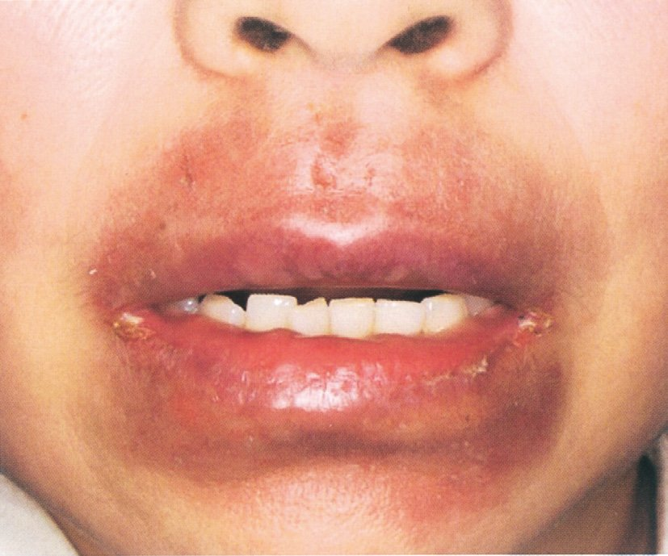
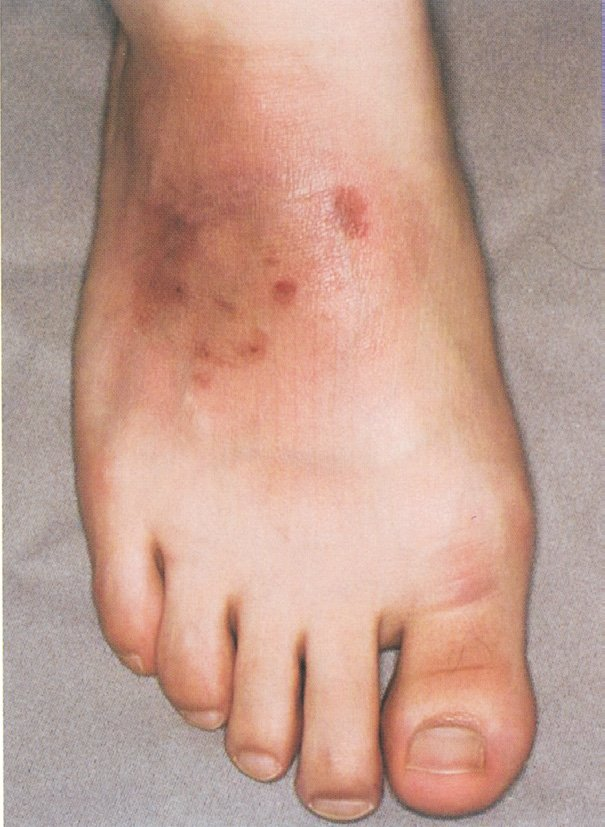
| 選択肢 | 解説 |
|---|---|
| ａ 咽頭炎 | 咽頭炎そのものが皮疹の原因ではない。溶連菌性咽頭炎なら猩紅熱様の皮疹や結節性紅斑を起こしうるが、「同じ場所に繰り返す類円形紅斑」という形にはならない。本例では咽頭痛は「感冒薬を飲む理由」として置かれた背景にすぎない。 |
| ｂ 紫外線 | テニス＝日光曝露という引っかけ。しかし日光皮膚炎・光線過敏型薬疹は露光部（顔・項部・前腕・手背）に一致して出るもので、陰茎という完全な非露光部に紅斑が出ることは説明できない。 |
| ｃ スギ花粉 | 花粉症の既往も引っかけ。花粉によるⅠ型アレルギーは鼻炎・結膜炎・（皮膚では）蕁麻疹や花粉皮膚炎（露光部）で、同一部位に反復する類円形紅斑は起こさない。そもそも3日前の発症とスギ花粉の時間関係も示されていない。 |
| ◯ ｄ 市販の感冒薬 | 感冒薬内服の翌朝に、1年前と同じ足背の同一部位を含めて類円形紅斑が出現し、灼熱感を伴う——固定薬疹の定義そのものである（Q.56）。口囲・陰茎・足背という好発部位の組合せも典型的で、市販感冒薬に含まれるNSAID／アセトアミノフェンが原因薬と考えられる。 |
| ｅ 単純ヘルペスウイルス | 再発性口唇ヘルペスの既往が置かれているため、HSV誘発性の多形滲出性紅斑を選びたくなる最大の罠。しかしHSV誘発EMは四肢末梢に標的状紅斑が左右対称に多発するもので（Q.60）、「毎回まったく同じ部位」に出るという特徴は持たない。本例に口唇ヘルペスの再燃を示す水疱の記載も無い。 |
| 固定薬疹 | HSV誘発性EM | |
|---|---|---|
| 誘因 | 原因薬の内服 | 口唇ヘルペスの再発（1〜2週後） |
| 部位 | 毎回まったく同じ部位（口囲・外陰・四肢） | 四肢末梢に左右対称、毎回同じとは限らない |
| 皮疹の形 | 境界明瞭な類円形の暗紅色斑、強いと中央に水疱 | 三重の同心円をなす標的状病変 |
| 症状 | 灼熱感・瘙痒 | 瘙痒・灼熱感 |
| 治癒後 | 境界明瞭な色素沈着を残す | 軽度の色素沈着 |
| 予防 | 原因薬の回避（薬剤カード） | 抗ヘルペス薬の長期予防内服 |
| 部位 | 好発する疾患 | 理由 |
|---|---|---|
| 下腿 | 結節性紅斑（前面）・硬結性紅斑（後面）・うっ滞性皮膚炎／潰瘍・壊疽性膿皮症・結節性多発動脈炎・IgA血管炎（紫斑）・糖尿病性リポイド類壊死症 | 静水圧が高く血流がうっ滞しやすい＝免疫複合体・炎症が沈着しやすい |
| 頭部・顔面（露光部） | 日光角化症・有棘細胞癌・基底細胞癌・悪性黒子・血管肉腫・ケラトアカントーマ・脂漏性皮膚炎・酒皶 | 紫外線曝露と皮脂腺の分布 |
| 脂漏部位（頭・眉間・鼻唇溝・前胸部） | 脂漏性皮膚炎・尋常性痤瘡・癜風 | 皮脂とマラセチア |
| 間擦部（腋窩・鼠径・乳房下） | カンジダ性間擦疹・化膿性汗腺炎・Hailey-Hailey病・黒色表皮腫 | 湿潤と摩擦 |
| 伸側（肘・膝） | 尋常性乾癬・Duhring疱疹状皮膚炎 | 機械的刺激（Köbner現象） |
| 屈側（肘窩・膝窩） | アトピー性皮膚炎（幼小児期） | 汗の貯留と摩擦 |
| 手掌・足底 | 掌蹠膿疱症・汗疱・掌蹠角化症・手足口病・梅毒（第2期の梅毒性乾癬） | 角層が厚くエクリン汗腺が多い |
| 選択肢 | 解説 |
|---|---|
| ａ 血管肉腫 | 高齢者の頭部・顔面（とくに前頭部・頭頂部）に好発する悪性軟部腫瘍。打撲斑（あざ）のような境界不明瞭な紫紅色斑で始まり、急速に浸潤・出血・潰瘍化して予後が極めて不良である。なお乳癌術後のリンパ浮腫肢に生じるものはStewart-Treves症候群。 |
| ◯ ｂ 硬結性紅斑 | 中年女性の下腿（とくに後面）に好発する慢性の脂肪織炎。結核アレルギー（結核疹）で、暗赤色の硬い皮下結節が持続し、潰瘍化して瘢痕を残す（Q.65）。 |
| ｃ 脂漏性皮膚炎 | 皮脂腺が多い部位＝被髪頭部・眉間・鼻唇溝・耳介周囲・前胸部・腋窩に好発する。Malassezia（マラセチア）の関与があり、乳児型と成人型がある。下腿は皮脂腺が乏しく好発部位ではない。 |
| ｄ ケラトアカントーマ | 高齢者の顔面など露光部に好発する。数週で急速に増大しドーム状に隆起、中央に角栓を充填した火口状の腫瘤となり、数か月で自然消退しうる。高分化型有棘細胞癌との鑑別が困難なため切除生検が行われる。 |
| ｅ 血管性浮腫〈Quincke浮腫〉 | 眼瞼・口唇など皮下組織の疎な部位や、喉頭・消化管粘膜に好発する。真皮深層〜皮下の限局性浮腫で、瘙痒は乏しく、数日で消退する。遺伝性血管性浮腫〈HAE〉はC1インヒビター欠損で、ACE阻害薬も原因となる。 |
| 所見 | 考える疾患 |
|---|---|
| 両側性・有痛性の紅色結節・急性 | 結節性紅斑（Q.58） |
| 両側性・硬い結節・慢性・潰瘍化 | 硬結性紅斑〈Bazin〉（Q.65） |
| 片側性・境界明瞭な熱感のある紅斑・発熱 | 丹毒・蜂窩織炎 |
| 下腿下1/3の色素沈着・湿疹・硬化・静脈瘤 | うっ滞性皮膚炎・静脈性下腿潰瘍 |
| 触知可能な紫斑（palpable purpura） | IgA血管炎・白血球破砕性血管炎 |
| 網状皮斑＋皮下結節＋多発単神経炎 | 結節性多発動脈炎 |
| 辺縁が穿掘性の急速拡大する潰瘍 | 壊疽性膿皮症（IBD・RA・血液疾患）、デブリードマン禁忌 |
| 足趾の冷感・間欠性跛行・足背動脈触知不良 | 閉塞性動脈硬化症による虚血性潰瘍 |
| 黄色〜褐色の萎縮性局面（毛細血管が透見） | リポイド類壊死症（糖尿病） |
| 領域 | 危険なサイン |
|---|---|
| 粘膜 | 眼球結膜の充血、口唇のびらん・血痂、口腔内びらん、外陰部びらん、排尿時痛・嚥下痛 |
| 皮膚 | 水疱・びらん、表皮剝離、Nikolsky現象陽性、皮疹の疼痛（痒みではなく「痛い」）、暗紅色・紫斑様の色調、広範な融合・紅皮症化 |
| 全身 | 38℃以上の発熱、全身倦怠感、顔面浮腫、リンパ節腫脹 |
| 検査 | 肝機能障害、腎機能障害、好酸球増多、異型リンパ球、白血球減少あるいは著明な増多 |
| 選択肢 | 解説 |
|---|---|
| ａ 白 斑 | メラノサイトの消失・機能低下による脱色素斑（尋常性白斑など）。炎症後に色素脱失を残すことはあるが、急性期の重症度指標ではない。 |
| ｂ 膨 疹 | 蕁麻疹の基本病変で、数時間以内に跡形なく消える一過性の限局性浮腫。Ⅰ型アレルギー（ヒスタミン）による所見であり、T細胞性の表皮壊死とは機序が違う。 |
| ｃ 発 赤 | あらゆる炎症で見られる最も非特異的な所見。軽症の播種状紅斑丘疹型薬疹でも当然みられるので、重症度を区別する指標にはならない。 |
| ｄ 苔癬化 | 慢性の搔破・摩擦により表皮が肥厚し、皮溝が深くなって革のようになった状態。アトピー性皮膚炎・慢性湿疹など「時間をかけて」できる所見で、急性に進行するTENでは生じない。 |
| ◯ ｅ 粘膜びらん | 眼・口唇口腔・外陰部の粘膜びらんは、SJS/TENを他の薬疹から区別し、重症であることを示す最重要の所見である。粘膜疹があれば直ちに重症薬疹として扱い、被疑薬中止と全身管理・眼科併診を開始する（Q.55・Q.59）。 |
| 病型 | 皮疹 | 重症度 |
|---|---|---|
| 播種状紅斑丘疹型 | 体幹から始まる小紅斑・丘疹が融合、瘙痒 | 最多。中止で軽快。ただしDIHSの初期像でもある |
| 蕁麻疹型 | 膨疹（Ⅰ型） | アナフィラキシーに進みうる |
| 固定薬疹 | 同一部位の類円形紅斑 | 軽症だが汎発性水疱型は重症（Q.56） |
| 光線過敏型 | 露光部に一致した紅斑 | 中等症 |
| 紅皮症型 | 体表の90％以上が紅斑・落屑 | 重症（体温・体液管理が必要） |
| SJS／TEN | 水疱・びらん＋粘膜疹 | 最重症（死亡率20〜30％） |
| DIHS | 紅斑〜紅皮症、顔面浮腫 | 重症（遷延・晩期に劇症1型糖尿病） |
| AGEP | 無菌性小膿疱 | 中等〜重症、中止で1〜2週で軽快 |
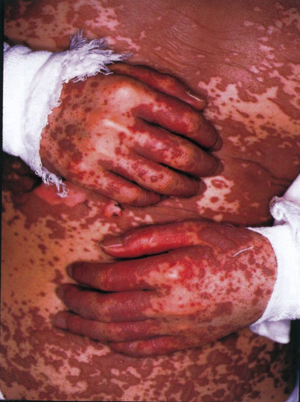
| 選択肢 | 解説 |
|---|---|
| ａ 免疫抑制薬 | シクロスポリンなどはステロイド抵抗例・難治例の選択肢であり、「まず投与する」薬ではない。広範な表皮欠損があり易感染状態の患者に、最初から強力な免疫抑制をかけるのは感染リスクの面でも適さない。 |
| ｂ 抗TNF-α抗体製剤 | TENへの有効性が報告されつつある薬剤だが、標準治療ではなく第一選択にはならない。関節リウマチ・炎症性腸疾患・乾癬などに用いる生物学的製剤で、結核の再燃など感染症のリスクがある。 |
| ◯ ｃ 副腎皮質ステロイド | 被疑薬の中止に続いて、まず行う薬物療法がステロイドの全身投与である。プレドニゾロン1〜2mg/kg／日（本例なら約50〜100mg／日）、重症例ではメチルプレドニゾロン500〜1,000mg／日×3日のパルス療法を可及的早期に開始する。効果不十分ならIVIG・血漿交換を追加する（Q.55・Q.79）。 |
| ｄ プロスタグランディン | 血管拡張・血流改善を目的とする薬（閉塞性動脈硬化症・皮膚潰瘍など）で、薬剤性の免疫反応を抑える作用はない。 |
| ｅ 非ステロイド性抗炎症薬〈NSAIDs〉 | 本例の被疑薬そのもの（総合感冒薬に含まれるNSAID）。投与は禁忌で、直ちに中止すべき対象である（Q.72と同じ論点）。 |
| 薬剤 | SJS/TENでの位置づけ |
|---|---|
| 副腎皮質ステロイド | 第一選択。早期・十分量・全身投与。パルス療法も可 |
| 免疫グロブリン大量静注〈IVIG〉 | ステロイド抵抗例に併用。抗Fas抗体作用で表皮細胞のアポトーシスを抑える |
| 血漿交換 | ステロイド・IVIGでも進行する例。起因薬・サイトカインを除去 |
| シクロスポリン | 海外で有効性の報告。本邦では第一選択ではない |
| 抗TNF-α抗体 | 研究段階。標準治療ではない |
| NSAID | 原因薬になりうるため投与しない |
| 予防的全身抗菌薬 | ルーチンには行わない（耐性菌）。感染徴候があれば培養を取って開始 |
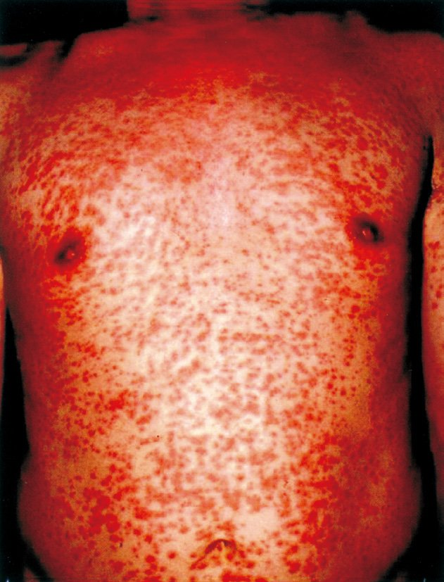
| 診断項目 | 本例の所見 |
|---|---|
| ①限られた薬剤の投与後、遅発性に生じる紅斑（しばしば紅皮症へ） | カルバマゼピン（代表的原因薬）を1か月＝遅い潜伏期。顔面・頸部から始まり全身に拡大する紅斑 |
| ②原因薬中止後も2週間以上遷延 | （経過は記載されないが、4週後も通院している） |
| ③38℃以上の発熱 | 体温38.5℃ |
| ④肝機能障害 | AST 88／ALT 91 |
| ⑤白血球増多／異型リンパ球／好酸球増多のいずれか | 白血球12,300・好酸球15％・異型リンパ球7％（3つとも該当） |
| ⑥リンパ節腫脹 | 頸部リンパ節腫脹 |
| ⑦HHV-6の再活性化 | 4週後にHHV-6 IgG抗体価の有意上昇 |
| 選択肢 | 解説 |
|---|---|
| ａ 膿疱性乾癬 | 全身の潮紅の上に無菌性膿疱が多発し、発熱・白血球増多・低アルブミン血症を伴う。主病変は膿疱であり、好酸球増多・異型リンパ球・HHV-6再活性化は伴わない。好中球性皮膚症の一つ（Q.64）。 |
| ｂ Gibertばら色粃糠疹 | 若年者の体幹に herald patch に続いて楕円形の淡紅色斑がクリスマスツリー状に多発する良性疾患で、高熱・肝障害・リンパ節腫脹といった全身症状を伴わない。1〜2か月で自然治癒する。 |
| ｃ Stevens-Johnson症候群 | 粘膜びらん（眼・口唇口腔・外陰）と表皮の壊死・剝離が必須だが、本例は口腔粘膜に異常を認めず、水疱・びらんの記載も無い（Q.55・Q.69）。 |
| ｄ ブドウ球菌性熱傷様皮膚症候群 | 乳幼児に多く、黄色ブドウ球菌の表皮剝脱毒素により顆粒層で浅く表皮が裂ける。口囲の放射状亀裂が特徴で、粘膜は侵さず、抗菌薬で治る。成人の薬剤性の病態とはまったく異なる。 |
| ◯ ｅ 薬剤性過敏症症候群〈drug-induced hypersensitivity syndrome〉 | カルバマゼピンを1か月内服（2〜6週の遅い潜伏期）、発熱、全身に拡大する紅斑、頸部リンパ節腫脹、好酸球15％、異型リンパ球7％、肝障害、そして4週後のHHV-6 IgG抗体価の有意上昇——DIHSの診断項目をほぼ全て満たす（Q.61）。 |
| 疾患 | 粘膜 | 血液 | 決め手 |
|---|---|---|---|
| DIHS | 軽度〜無 | 好酸球増多・異型リンパ球・肝障害 | 限られた薬剤・2〜6週・HHV-6再活性化 |
| 伝染性単核球症 | 咽頭炎・扁桃白苔 | 異型リンパ球著増・肝障害 | EBV抗体（VCA-IgM陽性・EBNA陰性）、アンピシリン投与後の皮疹 |
| 麻疹 | Koplik斑 | 白血球減少 | カタル症状→二峰性発熱→耳後部から下降する融合性紅斑、麻疹IgM |
| 成人Still病 | 咽頭痛 | 白血球増多・フェリチン著増 | 弛張熱に一致して出没するサーモンピンク疹 |
| SLE | 口腔潰瘍 | 白血球減少・低補体 | 抗dsDNA・抗Sm抗体 |
| 川崎病（小児） | 口唇紅潮・苺舌・眼球結膜充血 | 白血球増多・CRP高値・血小板増多（第2週） | 5日以上の発熱＋頸部リンパ節腫脹＋BCG痕発赤＋四肢末端の変化 |
| 菌状息肉症／Sézary症候群 | — | Sézary細胞 | 慢性の経過、紅皮症 |
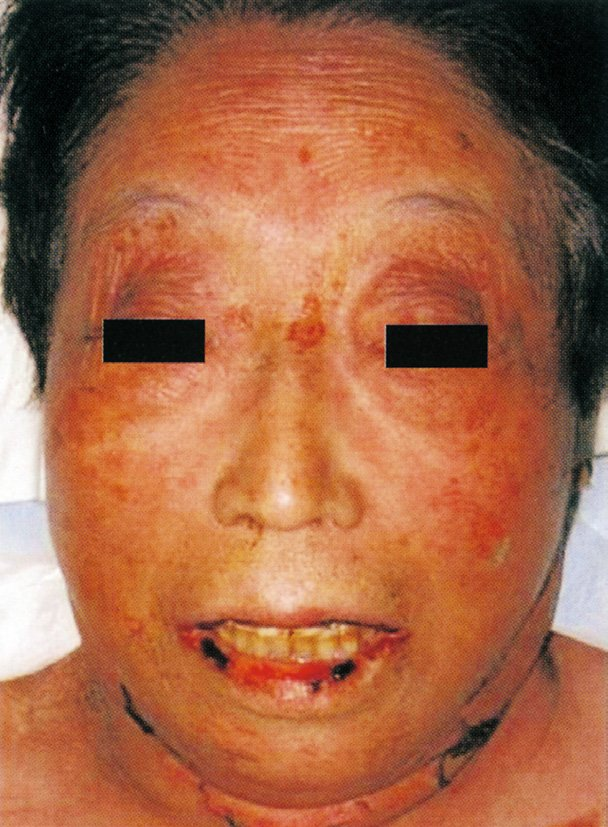
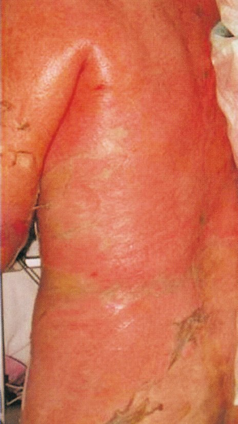
| 選択肢 | 解説 |
|---|---|
| ａ 輸 液 | 広範な表皮欠損では、不感蒸泄の増加と滲出により大量の体液・電解質・蛋白が失われる。熱傷に準じた輸液は必須で、循環動態と尿量を見ながら調整する。 |
| ｂ 外用療法 | びらん面には非固着性の創傷被覆材やステロイド外用・抗菌外用を用い、疼痛の軽減・上皮化の促進・二次感染の予防を図る。眼・口腔・外陰の粘膜処置も併せて行う。 |
| ｃ 血漿交換療法 | ステロイドやIVIGでも進行が止まらない重症例に対して、起因薬剤やサイトカインを除去する目的で行う。本邦のSJS/TEN診療ガイドラインにも治療選択肢として記載がある。 |
| ｄ 副腎皮質ステロイドの投与 | SJS/TENに対する薬物療法の第一選択で、可及的早期に十分量を全身投与する（Q.55・Q.70・Q.79）。 |
| ◯ ｅ 同一の非ステロイド性抗炎症薬の継続 | 被疑薬そのものの継続であり、絶対にしてはならない。重症薬疹における最優先の対応は被疑薬の即時中止で、中止が早いほど死亡率が下がることが知られている。継続すれば表皮壊死が進行し致死的となる。 |
| 状況 | 最優先の対応 |
|---|---|
| 薬疹（とくに重症薬疹） | 被疑薬の中止 |
| アナフィラキシー | 抗原の除去＋アドレナリン筋注（大腿前外側） |
| 接触皮膚炎 | 原因物質の除去（パッチテストで同定） |
| 職業性皮膚疾患 | 曝露の遮断・作業環境の改善 |
| 光線過敏型薬疹 | 被疑薬中止＋遮光 |
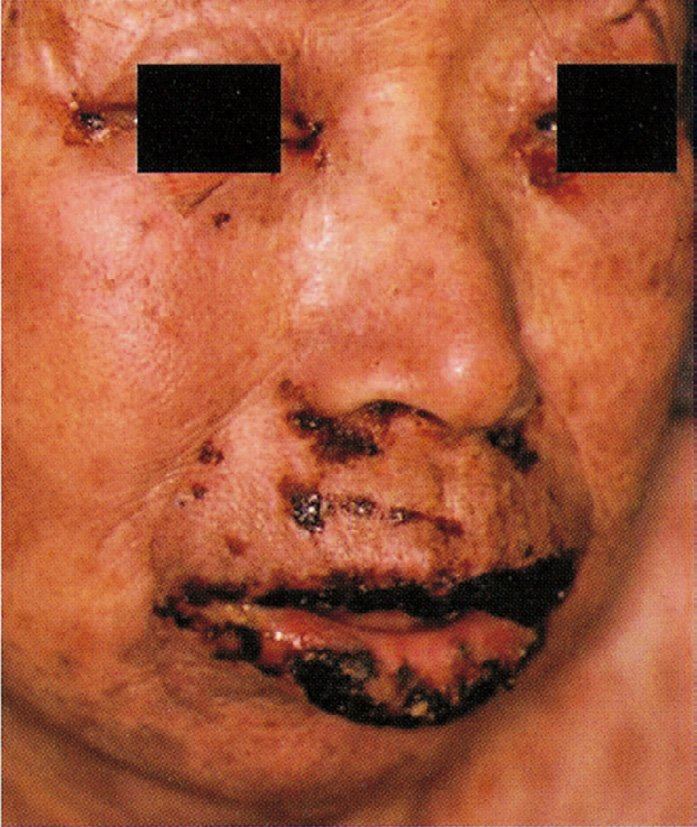
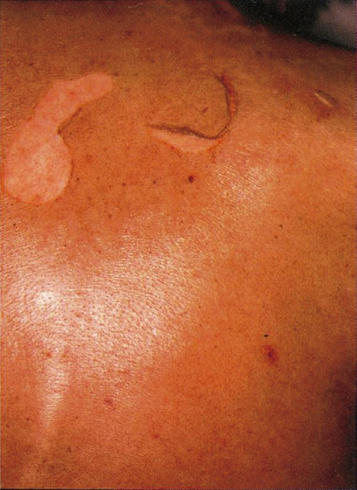
| 疾患 | 剝離のレベル | 粘膜 | 特徴 |
|---|---|---|---|
| TEN／SJS | 表皮全層壊死→表皮下（真皮表皮境界部） | 高度 | 薬剤歴、急性、高熱 |
| ブドウ球菌性熱傷様皮膚症候群〈SSSS〉 | 顆粒層（浅い） | 侵さない | 乳幼児、表皮剝脱毒素、口囲の放射状亀裂、抗菌薬で治癒 |
| 尋常性天疱瘡 | 表皮内（基底層直上の棘融解） | 口腔びらんで初発することが多い | 抗デスモグレイン3抗体、慢性、Tzanck試験で棘融解細胞 |
| 選択肢 | 解説 |
|---|---|
| ◯ ａ 中毒性表皮壊死剝離症〈TEN〉 | 市販感冒薬内服後の広範な紅斑・びらん、結膜と口腔の粘膜病変、そして「こすると容易にびらんを形成する」＝Nikolsky現象陽性。全身の80％という広範さも含めTENに合致する（Q.55・Q.59）。 |
| ｂ 結節性紅斑 | 下腿前面に有痛性の紅色結節が左右対称に出る隔壁性脂肪織炎（Q.58）。全身に及ぶことはなく、粘膜疹もNikolsky現象も無い。 |
| ｃ 膿疱性乾癬 | 全身の潮紅の上に無菌性膿疱が多発し、発熱・白血球増多を伴う。主病変は膿疱で、表皮が面で剝離するわけではない。既存の尋常性乾癬の急性増悪として起こることが多い。 |
| ｄ 扁平苔癬 | 四肢屈側・口腔粘膜に、光沢のある紫紅色の多角形扁平丘疹（Wickham線条）を慢性に生じる。口腔粘膜にレース状白斑を作り粘膜疹が問題になるが、経過は慢性で広範なびらんを急性に生じることはない。 |
| ｅ 固定薬疹 | 同一薬剤で毎回同じ部位に類円形紅斑を生じ、色素沈着を残す限局性の薬疹（Q.56・Q.67）。全身の80％に及ぶ紅斑・びらんと粘膜疹は説明できない。 |
| 選択肢 | 解説 |
|---|---|
| ａ 固定薬疹 | 同一薬剤で毎回同じ部位に類円形紅斑を生じ色素沈着を残す（Q.56・Q.67）。高熱と粘膜びらんを伴う全身性の病像には合わない。 |
| ｂ 扁平苔癬 | 光沢のある紫紅色の多角形扁平丘疹（Wickham線条）が四肢屈側・口腔粘膜に慢性に生じる。急性に高熱と広範な紅斑・水疱を生じることはない。C型肝炎との関連が知られる。 |
| ｃ 尋常性乾癬 | 銀白色の厚い鱗屑を伴う境界明瞭な浸潤性紅斑が被髪頭部・肘膝伸側・殿部に慢性に持続する。Auspitz現象・Köbner現象・爪の点状陥凹が特徴で、粘膜びらんは伴わない。 |
| ◯ ｄ 中毒性表皮壊死症 | 粘膜びらんを伴う重症薬疹のスペクトラムの一端。本例は表皮剝離の面積が記載されていないため、SJSかTENかを確定できず、両者とも「考えられる疾患」として成立する。病変が拡大すればTENへ進展しうる時期でもある。 |
| ◯ ｅ Stevens-Johnson症候群 | 高熱＋眼球結膜充血・口腔粘膜びらんという2か所以上の粘膜疹＋標的様紅斑の中央に水疱——SJSの典型像である。イブプロフェン（NSAID）は代表的な原因薬で、内服10日目という潜伏期も合致する。 |
| 選択肢 | 経過 | 粘膜 | 発熱 |
|---|---|---|---|
| 固定薬疹 | 反復性・限局 | 口唇・外陰に出ることはある | なし |
| 扁平苔癬 | 慢性 | 口腔にレース状白斑 | なし |
| 尋常性乾癬 | 慢性 | なし | なし（膿疱性乾癬は別） |
| SJS | 急性 | 高度（2か所以上） | あり |
| TEN | 急性 | 高度 | あり |
| 類結核型〈TT〉／少菌型 | らい腫型〈LL〉／多菌型 | |
|---|---|---|
| 細胞性免疫 | 強い（Th1優位） | 弱い（Th2優位） |
| 菌量 | 少ない | きわめて多い |
| 皮疹 | 少数・境界明瞭な脱色素斑／局面 | 多数・びまん性の浸潤（獅子様顔貌） |
| 知覚 | 病変部の知覚脱失が明瞭 | びまん性・末梢優位の知覚障害 |
| らい菌検出 | 陰性のことが多い | 陽性 |
| 選択肢 | 解説 |
|---|---|
| ◯ ａ Hansen病 | Hansen病（らい）の経過中に生じる免疫反応「らい反応」のうち、2型らい反応＝らい性結節性紅斑〈erythema nodosum leprosum：ENL〉がこれに当たる。多菌型（らい腫型）で、菌体抗原と抗体による免疫複合体（Ⅲ型）が沈着して発熱を伴う有痛性の紅色結節が多発する。 |
| ｂ Addison病 | 副腎皮質機能低下症。皮膚症状はACTH（POMC由来のMSH様作用）増加による色素沈着で、露光部・手掌の皺・歯肉・乳輪・瘢痕が黒ずむ。炎症性の結節は生じない。 |
| ｃ Buerger病 | 閉塞性血栓血管炎。若年喫煙男性の四肢末梢動脈・静脈に分節性の血栓性閉塞を生じる。虚血による間欠性跛行・安静時痛・指趾潰瘍／壊疽と、遊走性静脈炎が特徴で、脂肪織炎ではない。 |
| ｄ Churg-Strauss症候群 | 好酸球性多発血管炎性肉芽腫症〈EGPA〉の旧称。気管支喘息・好酸球増多・多発単神経炎を三徴とし、皮膚では紫斑・皮下結節・網状皮斑を生じる。小型血管の壊死性血管炎であり、隔壁性脂肪織炎とは異なる。 |
| ｅ Kasabach-Merritt症候群 | 乳児の巨大な血管性腫瘍（カポジ型血管内皮腫・房状血管腫）内で血小板が消費され、血小板減少と消費性凝固障害〈DIC〉を来す。腫瘍と出血傾向の問題であり、結節性紅斑とは関係がない。 |
| 感染症 | 特徴 |
|---|---|
| A群β溶血性連鎖球菌 | 最多。小児・若年者。咽頭炎の1〜3週後。ASO／ASK上昇 |
| 結核 | 初感染時。硬結性紅斑（Bazin）とは別（Q.65） |
| Hansen病 | 2型らい反応＝ENL。多菌型に生じ、発熱・虹彩炎・神経炎を伴う |
| エルシニア腸炎・カンピロバクター | 下痢に続いて発症 |
| マイコプラズマ・クラミジア | 呼吸器感染に続いて |
| 深在性真菌症（コクシジオイデス・ヒストプラズマ） | 流行地域への渡航歴 |
| 猫ひっかき病・EBV・B型肝炎 | まれ |
| 主症状 | 内容 |
|---|---|
| ①口腔粘膜の再発性アフタ性潰瘍 | ほぼ全例に見られ、多くは初発症状。有痛性・円形・境界明瞭 |
| ②皮膚症状 | 結節性紅斑様皮疹（下腿に有痛性紅色結節）／毛囊炎様皮疹・痤瘡様皮疹／皮下の血栓性静脈炎／針反応陽性 |
| ③眼症状 | 虹彩毛様体炎（前部ぶどう膜炎・前房蓄膿）／網膜ぶどう膜炎（後部）。失明の原因となる最重要症状 |
| ④外陰部潰瘍 | 有痛性で瘢痕を残すことがある |
| 選択肢 | 解説 |
|---|---|
| ◯ ａ Behçet病 | Behçet病の4主症状の一つが「結節性紅斑様皮疹」である。再発性アフタ性口内炎・外陰部潰瘍・皮膚症状・眼症状（ぶどう膜炎）で構成され、皮膚症状には結節性紅斑様皮疹のほか、毛囊炎様皮疹（痤瘡様皮疹）・血栓性静脈炎・針反応陽性が含まれる。 |
| ｂ アレルギー性紫斑病 | IgA血管炎〈Henoch-Schönlein紫斑病〉。下肢優位の触知可能な紫斑〈palpable purpura〉・関節痛・腹痛・腎炎が四徴で、病変は真皮の小血管の白血球破砕性血管炎であり、脂肪織炎ではない。 |
| ｃ 全身性硬化症〈強皮症〉 | 皮膚硬化・Raynaud現象・爪郭部毛細血管異常・間質性肺炎・逆流性食道炎・腎クリーゼが主体（Q.58でも誤答肢として登場）。硬化と線維化の疾患であって、急性の炎症性結節を作らない。 |
| ｄ Stevens-Johnson症候群 | 粘膜びらんと表皮壊死を伴う重症薬疹（Q.55・Q.81）。紅斑・水疱・びらんが主病変で、皮下脂肪織の炎症は起こさない。 |
| ｅ 全身性エリテマトーデス〈SLE〉 | 蝶形紅斑・円板状皮疹・日光過敏・口腔潰瘍・脱毛が皮膚症状の中心。SLEに伴う脂肪織炎は「ループス脂肪織炎（深在性エリテマトーデス）」という別の病型で、典型的な結節性紅斑とは区別される。 |
| 病型・症状 | 治療 |
|---|---|
| 口腔アフタ・皮膚症状 | ステロイド外用・コルヒチン |
| 関節炎 | コルヒチン・NSAID |
| 眼（ぶどう膜炎） | コルヒチン、シクロスポリン、インフリキシマブ／アダリムマブ（抗TNF-α抗体）。失明予防のため早期に強力な治療 |
| 腸管型 | ステロイド・5-ASA・抗TNF-α抗体。穿孔・出血には手術 |
| 神経型・血管型 | ステロイド全身投与＋免疫抑制薬 |
| カテゴリ | 疾患 |
|---|---|
| 感染症 | A群β溶連菌（最多）・結核・Hansen病（ENL）・エルシニア・マイコプラズマ・深在性真菌症（Q.75） |
| 肉芽腫性疾患 | サルコイドーシス（Löfgren症候群＝結節性紅斑＋BHL＋関節炎） |
| 炎症性腸疾患 | Crohn病・潰瘍性大腸炎（Q.58） |
| 血管炎・自己炎症 | Behçet病 |
| 薬剤・生理的 | 経口避妊薬・スルホンアミド・妊娠 |
| 腫瘍 | 白血病・リンパ腫（まれ） |
| 選択肢 | 解説 |
|---|---|
| ａ 血管浮腫 | 眼瞼・口唇など皮下組織の疎な部位に生じる限局性の深部浮腫で、紅斑ではなく「腫れ」が主症状。発熱・好酸球増多・肝障害を伴わない。ACE阻害薬やC1インヒビター欠損が原因となる。 |
| ｂ 伝染性単核球症 | EBV初感染。発熱・咽頭痛・頸部リンパ節腫脹・肝脾腫・異型リンパ球著増を来す。好酸球24％という著明な増多は説明できず、68歳という年齢もEBV初感染としては合わない（大半は成人までに既感染）。 |
| ◯ ｃ 薬剤性過敏症症候群 | カルバマゼピン内服中に、遷延する高熱・全身の紅斑・好酸球24％・肝障害・HHV-6抗体価の上昇が揃う。DIHSそのものである（Q.61・Q.71）。「6日前に淡い紅斑が出て2日で消退し、その後に高熱と皮疹が再燃」という二峰性の経過もDIHSらしい。 |
| ｄ Sézary症候群 | 皮膚T細胞リンパ腫（菌状息肉症）が白血化した病型。紅皮症・全身のリンパ節腫脹・末梢血のSézary細胞（脳回状核）が三徴で、経過は慢性であり、薬剤との時間関係やHHV-6再活性化とは無関係。 |
| ｅ Stevens-Johnson症候群 | 粘膜びらんが必須だが、本例は「粘膜疹を認めない」と明記されている（Q.69）。好酸球増多・HHV-6再活性化もSJSの特徴ではない。 |
| 高齢者で頻用され、DIHSを起こす薬 | 用途 |
|---|---|
| アロプリノール | 高尿酸血症。HLA-B*58:01がリスク。腎機能低下で減量を要する |
| カルバマゼピン | てんかん・三叉神経痛。HLA-A*31:01 |
| サラゾスルファピリジン | 関節リウマチ・潰瘍性大腸炎 |
| メキシレチン | 不整脈・糖尿病性神経障害 |
| ジアフェニルスルホン〈DDS〉 | 皮膚疾患（水疱性類天疱瘡等） |
| ミノサイクリン | 感染症・痤瘡 |
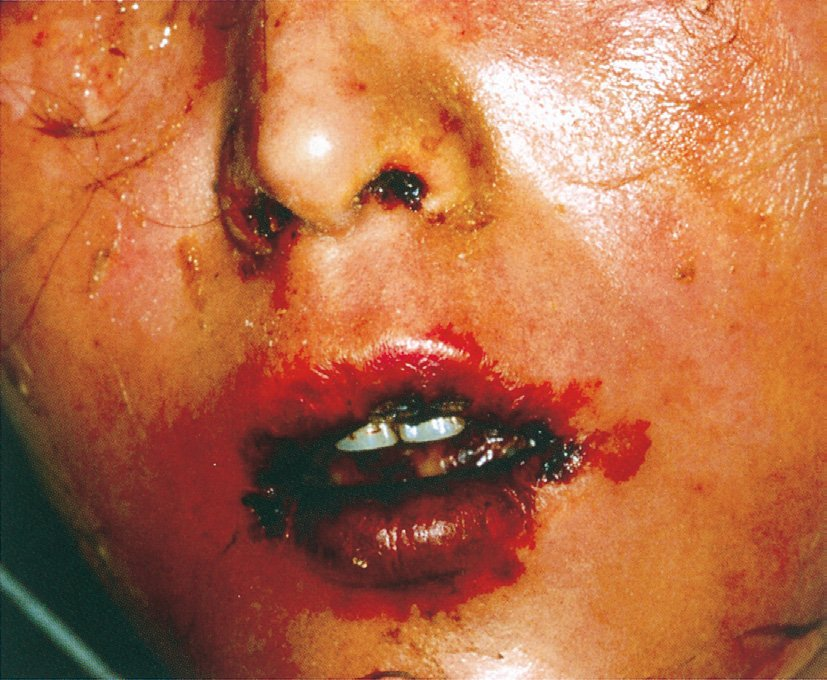
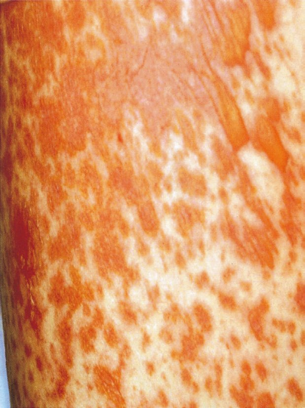
| 選択肢 | 解説 |
|---|---|
| ◯ ａ 薬 疹 | 感冒薬内服後に、発熱・全身の紅色皮疹・眼球結膜充血・口腔内びらんが出現——粘膜疹を伴う重症薬疹（Stevens-Johnson症候群）である（Q.81とほぼ同じ構図）。肝障害（ALT 283）も薬剤性の全身反応を裏づける。 |
| ｂ 敗血症 | 感染巣からの菌血症により全身性の炎症反応と臓器障害を来す状態。意識障害・呼吸数増加・血圧低下・乳酸上昇といった臓器障害の所見が中心で、本例は意識清明・血圧104/72と保たれ、感染巣も明らかでない。眼球結膜充血と口腔内びらんという粘膜疹も敗血症では説明できない。 |
| ｃ アナフィラキシー | Ⅰ型アレルギーによる急性全身反応で、曝露から数分〜30分以内に蕁麻疹・血管性浮腫・気道狭窄・血圧低下を来す。経過が数日にわたる本例とは時間スケールがまったく違い、発熱・粘膜びらん・肝障害も伴わない。 |
| ｄ ウイルス性発疹症 | 麻疹・風疹・伝染性紅斑・突発性発疹など。確かに発熱と皮疹を来すが、眼球結膜充血と口腔内びらんの組合せは薬剤との時間的関係のもとでは重症薬疹を強く示唆する。麻疹ならKoplik斑とカタル症状、風疹なら後頸部リンパ節腫脹が手がかりになる。 |
| ｅ 播種性血管内凝固〈DIC〉 | 基礎疾患に伴い凝固が全身で活性化し、血小板減少・PT延長・フィブリノゲン低下・FDP／D-ダイマー上昇と出血傾向を来す。本例は血小板24万と正常で、DICを示す所見が一つも無い。 |
| カテゴリ | 疾患 | 決め手 |
|---|---|---|
| 重症薬疹 | SJS／TEN・DIHS・AGEP | 薬剤歴、粘膜疹、水疱・びらん、好酸球増多 |
| ウイルス性発疹症 | 麻疹・風疹・伝染性紅斑・突発性発疹・伝染性単核球症 | Koplik斑、後頸部リンパ節、頬の紅斑、解熱後の皮疹、異型リンパ球 |
| 細菌毒素性 | 猩紅熱・トキシックショック症候群〈TSS〉・SSSS | 苺舌・びまん性紅斑・ショック・落屑、乳幼児 |
| リケッチア | つつが虫病・日本紅斑熱 | 刺し口（黒色痂皮）・野外活動歴 |
| 膠原病・自己炎症 | 成人Still病・SLE・血管炎・川崎病 | フェリチン著増、抗核抗体、紫斑、5日以上の発熱 |
| 好中球性皮膚症 | Sweet病 | 有痛性の浮腫性紅色局面、好中球増多（Q.80） |
| 敗血症・感染性心内膜炎 | — | 血液培養、Osler結節・Janeway斑、心雑音 |
| 選択肢 | 解説 |
|---|---|
| ａ 抗菌薬 | 本態は細菌感染症ではないので一次治療にならない。びらん面からの二次感染・敗血症を疑う所見が出たときに、培養を取ったうえで開始するのが原則で、予防的なルーチン投与は耐性菌を生むため推奨されない。 |
| ｂ 抗ウイルス薬 | HSV誘発性の多形滲出性紅斑には意味があるが（Q.60）、本例は感冒薬内服後に発症した薬剤性のSJSであり、ウイルス感染を示す所見が無い。 |
| ｃ 抗アレルギー薬 | 抗ヒスタミン薬・ロイコトリエン受容体拮抗薬などはⅠ型アレルギー（蕁麻疹・鼻炎・喘息）の薬。SJS/TENは細胞傷害性T細胞による表皮壊死（Ⅳ型）であり、表皮壊死の進行を止められない。瘙痒の対症薬にとどまる。 |
| ◯ ｄ 副腎皮質ステロイド | 被疑薬（感冒薬）の中止に続く薬物療法の第一選択。プレドニゾロン1〜2mg/kg／日、重症例はステロイドパルスを可及的早期に開始し、熱傷に準じた輸液・栄養・創部管理と眼科併診を並行させる（Q.55・Q.70・Q.72）。 |
| ｅ 非ステロイド性抗炎症薬 | 感冒薬に含まれていた可能性が高く、被疑薬そのもの。SJS/TENの代表的な原因薬であり、投与は禁忌である。解熱目的でも使ってはならない。 |
| 薬 | 効く機序 | SJS/TENに効くか |
|---|---|---|
| 抗菌薬 | 細菌の増殖阻害 | ×（細菌感染ではない） |
| 抗ウイルス薬 | ウイルス複製の阻害 | ×（ウイルス感染ではない） |
| 抗アレルギー薬（抗ヒスタミン薬） | ヒスタミンH1受容体の遮断＝Ⅰ型 | ×（Ⅳ型なので機序が違う） |
| 副腎皮質ステロイド | T細胞・サイトカインを含む免疫反応全般の抑制 | ◯（第一選択） |
| NSAID | COX阻害による解熱・鎮痛 | ×（被疑薬・禁忌） |
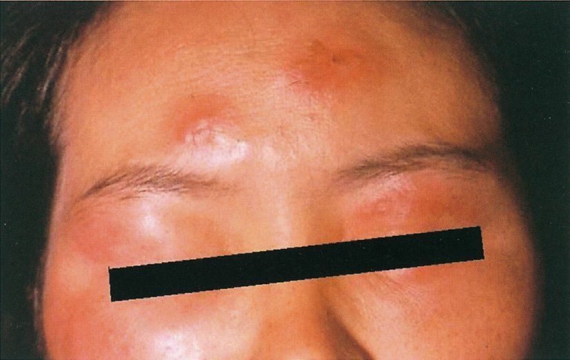
| 選択肢 | 解説 |
|---|---|
| ａ 丹 毒 | A群β溶血性連鎖球菌による真皮浅層の感染症。境界明瞭で光沢のある鮮紅色の腫脹が顔面や下腿に生じ、発熱・悪寒を伴う。確かに紛らわしいが、通常は片側性で、本例のように「顔面と四肢」に多発することはない。抗菌薬（ペニシリン）が奏効する点も鑑別になる。 |
| ◯ ｂ Sweet病 | 発熱を伴い、圧痛のある浸潤性（浮腫性）紅斑が顔面・四肢に急性多発し、病理で真皮に好中球の強い浸潤を認める——Sweet病〈急性熱性好中球性皮膚症〉の診断基準そのものである（Q.63・Q.64）。 |
| ｃ 皮膚筋炎 | 上眼瞼のヘリオトロープ疹・手指関節伸側のGottron徴候・ショール徴候が特徴で、近位筋の筋力低下とCK上昇を伴う（Q.60）。病理は真皮の粘液沈着と血管周囲のリンパ球浸潤で、好中球浸潤ではない。 |
| ｄ 貨幣状湿疹 | 四肢（とくに下腿）に貨幣大の類円形の湿疹局面が多発するもの。瘙痒が主症状で、発熱を伴わない。病理は海綿状態を伴う湿疹反応である。 |
| ｅ 円板状エリテマトーデス | 顔面・耳介・被髪頭部に、萎縮性瘢痕と毛孔性角栓を伴う境界明瞭な円板状の紅斑を慢性に生じる。経過は慢性で発熱を伴わず、病理は界面皮膚炎（liquefaction degeneration）とリンパ球浸潤である。 |
| 疾患 | 分布 | 経過 | 決め手 |
|---|---|---|---|
| Sweet病 | 顔・頸・上肢に非対称に多発 | 急性・発熱を伴う | 真皮の好中球浸潤、好中球増多、ステロイド著効 |
| 丹毒 | 片側性・境界明瞭・光沢のある鮮紅色 | 急性・発熱・悪寒 | A群溶連菌、ASO上昇、ペニシリンが奏効 |
| 蜂窩織炎 | 片側性・境界不明瞭・深部 | 急性・発熱 | 黄色ブドウ球菌・溶連菌、抗菌薬 |
| SLE（蝶形紅斑） | 両頬と鼻背、鼻唇溝は避ける | 慢性・再燃寛解 | 抗dsDNA・抗Sm抗体、低補体、日光過敏 |
| 皮膚筋炎 | 上眼瞼の紫紅色浮腫（ヘリオトロープ疹） | 亜急性 | Gottron徴候、CK上昇、悪性腫瘍の検索 |
| 円板状エリテマトーデス | 顔面・耳介・頭部、円板状 | 慢性 | 萎縮性瘢痕・毛孔性角栓・脱毛 |
| 酒 皶 | 顔面中央（鼻・頬） | 慢性・紅潮の反復 | 毛細血管拡張・丘疹膿疱、誘因（温度・アルコール） |
| 脂漏性皮膚炎 | 眉間・鼻唇溝・生え際 | 慢性・再燃 | 黄色調の鱗屑、マラセチア |
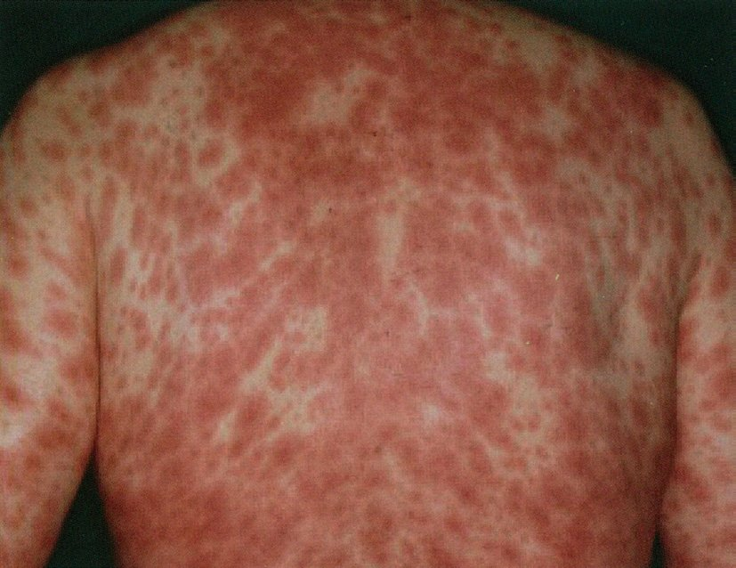
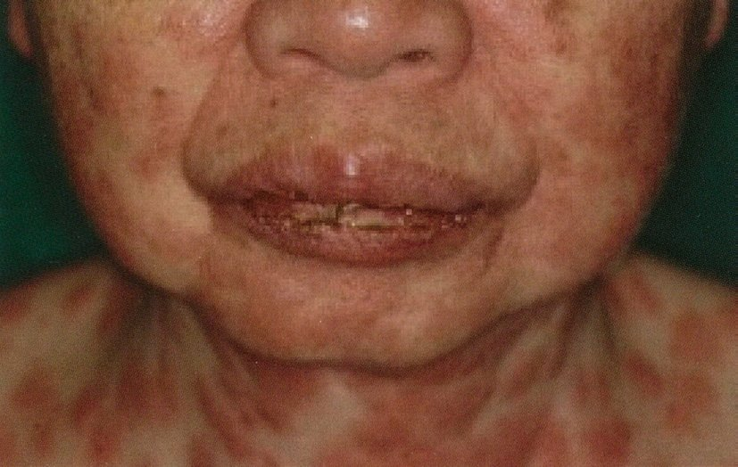
| 項目 | 本例 |
|---|---|
| 薬剤歴（4週以内） | 5日前に感冒薬を内服 |
| 発熱 | あり（関節痛も伴う） |
| 粘膜疹（2か所以上） | 結膜充血＋口腔内びらん |
| 皮疹の広がり | 顔面・体幹・四肢の全身 |
| 表皮剝離の面積 | 記載なし（SJSかTENかは面積で決まる） |
| SJS/TEN | 尋常性天疱瘡 | |
|---|---|---|
| 経過 | 数日で完成する急性 | 週〜月単位の慢性 |
| 誘因 | 薬剤 | 自己免疫（誘因不明） |
| 発熱 | あり | 通常なし |
| 水疱 | 紅斑上の水疱→広範なびらん | 正常皮膚上の弛緩性水疱 |
| Nikolsky | 陽性 | 陽性 |
| 病理 | 表皮全層壊死 | 基底層直上の棘融解 |
| 免疫 | — | 抗デスモグレイン3抗体、蛍光抗体直接法で表皮細胞間にIgG沈着 |
| 選択肢 | 解説 |
|---|---|
| ａ Sweet病 | 発熱と有痛性の浮腫性紅色局面が顔面・頸部・上肢に多発し、真皮に好中球が浸潤する疾患（Q.63・Q.80）。粘膜びらんは伴わず、薬剤との時間的関係もこの病像を説明しない。 |
| ｂ 結節性紅斑 | 下腿前面に有痛性の紅色結節が左右対称に出る隔壁性脂肪織炎（Q.58）。顔面・体幹に及ぶ広範な紅色皮疹や、結膜充血・口腔内びらんは生じない。 |
| ｃ 膿疱性乾癬 | 全身の潮紅の上に無菌性膿疱が多発し、発熱・白血球増多・低アルブミン血症を伴う。主病変は膿疱で、粘膜びらんは通常伴わない（Q.71でも誤答肢として登場）。 |
| ｄ 尋常性天疱瘡 | 抗デスモグレイン3抗体による表皮内（棘融解）水疱症で、口腔粘膜のびらんで初発することが多いのは確かに紛らわしい。しかし経過は慢性で、弛緩性水疱とびらんが緩徐に拡大するものであり、薬剤内服の数日後に発熱を伴って急性発症することはない。 |
| ◯ ｅ Stevens-Johnson症候群 | 感冒薬内服の2日後から発熱・結膜充血・口腔内びらん・全身の紅色皮疹が急性に出現——粘膜疹（眼＋口腔の2か所）を伴う重症薬疹＝SJSの典型像である（Q.55・Q.78）。 |
| 疾患 | キーワード | 本章の該当問題 |
|---|---|---|
| SJS／TEN | 薬剤＋高熱＋粘膜疹＋表皮壊死。面積10％／30％で分類。治療はステロイド全身投与 | Q.55・59・62・69・70・72・73・74・78・79・81 |
| 薬剤性過敏症症候群〈DIHS〉 | 限られた薬剤・2〜6週・遷延／再燃・好酸球増多・異型リンパ球・肝障害・HHV-6再活性化・後に劇症1型糖尿病 | Q.61・71・77 |
| 固定薬疹 | 同一薬で同一部位に反復・色素沈着・病変部にパッチテスト | Q.56・67 |
| 多形滲出性紅斑 | 四肢末梢の標的状病変・HSVが最多の誘因・マイコプラズマ | Q.60・67 |
| 結節性紅斑 | 下腿前面・有痛性・隔壁性脂肪織炎・瘢痕を残さない。溶連菌／サルコイド／Behçet／IBD／Hansen病 | Q.58・66・75・76 |
| 硬結性紅斑〈Bazin〉 | 下腿後面・慢性・潰瘍化・小葉性脂肪織炎＋血管炎・結核アレルギー | Q.65・68 |
| Sweet病 | 発熱＋有痛性の浮腫性紅色局面＋真皮の好中球浸潤・関節痛・血液悪性腫瘍の検索・ステロイド著効 | Q.63・64・80 |